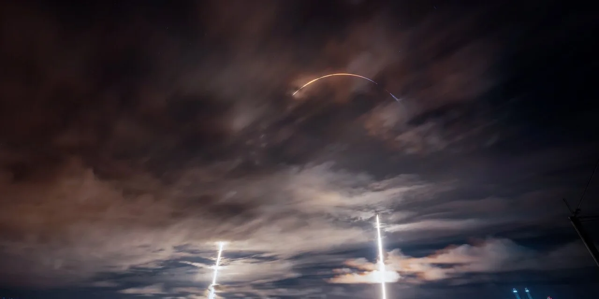

AST 스페이스모바일 주주가 지금 가장 궁금해할 질문은 “통신사 파트너가 많다는 말이 실제 서비스 매출로 언제 바뀌는가”입니다. 이 회사는 일반 스마트폰이 별도 위성 단말기 없이 저궤도 위성과 직접 통신하게 만들겠다는 매우 큰 목표를 내세웁니다. 이야기는 매력적입니다. 산악, 해상, 농촌, 재난 지역처럼 기지국이 닿지 않는 곳에서도 기존 휴대전화가 연결된다면 통신사와 정부 고객 모두에게 쓸모가 있습니다. 다만 투자자는 먼저 좋은 상상과 아직 증명되지 않은 숫자를 분리해야 합니다.
AST 스페이스모바일의 2026년 1분기 실적 발표 자료를 보면 회사는 2026년 매출 가이던스를 1억 5,000만 달러에서 2억 달러로 제시했습니다. 1분기 매출은 1,470만 달러였고, 회사는 연간 가이던스의 약 절반이 기존 계약 백로그에서 나올 것으로 예상했습니다. 현금, 현금성 자산, 제한 현금을 합친 금액은 2026년 3월 31일 기준 약 35억 달러였습니다. 숫자만 보면 시간을 벌어 둔 것처럼 보입니다. 그러나 우주 통신 사업은 시간이 곧 비용입니다.
이 글에서 볼 핵심은 주가의 단기 방향이 아니라 검증 순서입니다. AST 스페이스모바일은 통신사 파트너 수, 속도 테스트, 정부 과제, 인공지능 엣지 기능 같은 단어가 한꺼번에 붙는 회사입니다. 이런 회사일수록 멋진 발표보다 일정표가 먼저입니다. 위성이 실제 궤도에 올라가고, 보험으로 손실을 회수하고, 지상망과 통신사 과금 체계가 붙고, 영업비용이 매출보다 느리게 늘어나는지를 확인해야 합니다.
파트너 수는 매출이 아니라 선택권입니다

AST 스페이스모바일은 전 세계 약 60개 이동통신사 파트너가 30억 명이 넘는 가입자를 포괄한다고 설명합니다. 미국, 캐나다, 영국, 인도, 브라질, 일본, 여러 아프리카 국가까지 지상망 통합을 준비하는 지역도 넓습니다. 이 숫자는 중요한 자산입니다. 직접 소비자에게 통신 요금제를 팔지 않아도 기존 통신사의 고객 기반을 통해 서비스가 확산될 수 있기 때문입니다.
하지만 파트너 수를 곧바로 매출로 읽으면 위험합니다. 통신사 파트너십은 대부분 “서비스가 준비되면 팔 수 있는 길”을 넓혀 주는 성격입니다. 실제 매출은 위성 커버리지, 서비스 품질, 규제 승인, 통신사 요금제 편성, 고객 사용량, 정산 구조가 맞아야 발생합니다. AST 스페이스모바일이 가진 선택권은 넓지만, 아직 선택권이 반복 매출로 굳었다고 보기는 이릅니다.
미국에서는 FCC가 Supplemental Coverage from Space 승인을 부여해 최대 248기 위성 네트워크를 활용한 상업 서비스를 허용했습니다. 이 승인은 큰 진전입니다. 그러나 규제 승인은 매출 인식의 출발선이지 결승선이 아닙니다. 각 국가마다 주파수, 긴급통신, 통신사와의 도매 정산 방식이 다르고, 서비스 품질이 일정 수준에 도달해야 일반 고객에게 팔 수 있습니다. 그래서 투자자는 “어느 통신사가 이름을 올렸는가”보다 “어느 지역에서 언제 과금이 시작되는가”를 더 크게 봐야 합니다.
45기 배치 목표는 보험과 발사 일정이 함께 흔듭니다
관련 영상
[실전!해외주식] AST 스페이스모바일, 위성 통신 혁신으로 주가 급등…2026년 전망은
회사는 2026년 약 45기의 BlueBird 위성을 궤도에 올리는 것을 목표로 합니다. BlueBird 8, 9, 10은 팰컨 9 발사체로 6월 중순 발사를 예상했고, BlueBird 11부터 33까지는 생산과 조립이 진행 중이라고 설명했습니다. 생산설비도 커지고 있습니다. 회사는 전 세계 제조·운영 공간이 50만 제곱피트 이상이며, 텍사스 마이크론 생산 시설이 월 10기 이상의 위성에 들어갈 물량을 지원할 수 있다고 밝혔습니다.
그러나 우주 사업에서 생산 진도와 궤도 배치는 같은 말이 아닙니다. 2026년 4월 19일 공시된 BlueBird 7 관련 8-K를 보면, New Glenn 3 임무에서 Block 2 BlueBird 7은 예정 궤도보다 낮은 위치에 투입됐고, 탑재 추진기로는 운용 가능한 고도를 유지하기 어려워 재진입 처리될 예정이라고 회사가 밝혔습니다. 회사는 보험으로 비용을 회수할 것으로 예상했지만, 투자자 입장에서는 이 사건이 더 큰 질문을 남깁니다.
그 질문은 “한 번의 발사 차질이 2026년 배치 속도에 얼마나 영향을 주는가”입니다. AST 스페이스모바일은 블루 오리진, 스페이스X 등 여러 발사 제공자와 협력해 평균 한두 달마다 궤도 발사를 기대한다고 설명했습니다. 여러 발사사를 쓰는 전략은 분산 효과가 있습니다. 동시에 발사 창, 생산 완료, 보험 청구, 지상국 통합, 규제 승인이 모두 맞아야 하므로 실행 난이도는 높습니다. 우주 통신주는 발사 성공률이 낮아서 위험한 것이 아니라, 일정 지연 하나가 매출 인식과 현금 소진을 동시에 흔들 수 있어서 어렵습니다.
현금 35억 달러는 충분해 보여도 소진 속도를 봐야 합니다
2026년 1분기 10-Q에서 AST 스페이스모바일의 현금 및 현금성 자산은 약 30억 2,959만 달러였습니다. 제한 현금을 더하면 회사가 발표한 약 35억 달러 수준이 됩니다. 이 정도 현금은 분명 작은 금액이 아닙니다. 특히 위성 배치와 상업 서비스 개시 전 단계의 회사가 시간을 확보했다는 점에서는 의미가 있습니다.
문제는 비용 구조입니다. 2026년 1분기 총매출은 1,473만 5,000달러였지만, 총영업비용은 1억 6,414만 7,000달러였습니다. 엔지니어링 서비스 비용만 8,409만 7,000달러였고, 일반관리비는 4,365만 7,000달러였습니다. 순손실은 보통주 주주 기준 1억 9,101만 2,000달러였습니다. 회사가 성장 단계라는 점을 감안해도, 아직 매출 규모가 비용 구조를 받쳐 주기에는 작습니다.
또 하나 볼 숫자는 장기 부채입니다. 10-Q 기준 장기 부채 순액은 약 29억 6,330만 달러였습니다. 회사는 2032년, 2036년 만기의 전환사채를 통해 대규모 자금을 조달했습니다. 전환사채는 현금을 확보하는 데 유용하지만, 주가와 전환 조건에 따라 향후 주주 희석 논쟁을 만들 수 있습니다. AST 스페이스모바일은 지금 당장 파산 위험을 보는 회사라기보다, 큰 현금을 들고도 빠르게 대규모 네트워크를 완성해야 하는 회사입니다.
이런 구조에서는 “현금이 많다”는 말만으로는 부족합니다. 투자자는 분기별 조정 영업비용, 자본화되는 위성 제조 비용, 발사 선급금, 보험 회수 시점, 매출 백로그 전환률을 함께 봐야 합니다. 특히 연간 가이던스 1억 5,000만~2억 달러가 달성되더라도, 그 매출이 위성 배치 비용을 얼마나 흡수하는지 확인해야 합니다. 높은 매출 성장률은 작년 기저가 낮으면 쉽게 커 보일 수 있습니다. 중요한 것은 매출 성장과 비용 증가의 간격입니다.
다음 분기에는 어떤 신호가 먼저일까
첫 번째 확인 신호는 BlueBird 8, 9, 10 발사와 이후 초기 운용입니다. 발사가 예정대로 이뤄지는지, 위성이 정상적으로 전개되는지, 지상국·통신사망과의 통합 일정이 밀리지 않는지 확인해야 합니다. 2026년 45기 목표가 유지되더라도, 그 목표를 분기별로 쪼개 보면 시장이 기대하는 상업 서비스 시작 시점이 현실적인지 더 잘 보입니다.
두 번째는 매출 가이던스의 구성입니다. 회사는 2026년 매출이 모바일 네트워크 파트너와 미국 정부에서 주로 나온다고 설명했습니다. 정부 과제 매출은 기술 검증 단계에서 도움이 되지만, 장기적인 기업 가치는 통신사 고객을 통한 반복 매출에서 더 크게 결정될 가능성이 큽니다. 따라서 다음 실적에서는 게이트웨이 납품이나 마일스톤 매출이 아니라, 통신사와의 서비스 매출이 어느 정도 실제로 보이기 시작하는지가 중요합니다.
세 번째는 기술 성능과 상업 품질의 차이입니다. AST 스페이스모바일은 Block 1 BlueBird 위성이 일반 스마트폰과 직접 연결해 국제 수역에서 최대 98.9Mbps 속도를 냈다고 밝혔습니다. 기술적으로는 매우 강한 성과입니다. 그러나 투자자는 최고 속도보다 평균 연결 품질, 서비스 가능 지역, 동시 접속, 배터리 영향, 통신사 요금제 적용 가능성을 봐야 합니다. 최고 기록은 주가를 움직일 수 있지만, 반복 매출은 평균 품질에서 나옵니다.
네 번째는 경쟁 구도입니다. 스페이스X의 스타링크, 기존 위성통신사, 통신장비 업체, 각국 정부 프로젝트가 모두 직접·간접 경쟁자가 될 수 있습니다. AST 스페이스모바일은 일반 스마트폰 직접 연결이라는 차별점이 있지만, 서비스가 늦어지면 시장은 다른 대안을 받아들일 수 있습니다. 기술 우위가 오래가려면 특허와 주파수, 통신사 계약, 실제 커버리지 속도가 함께 맞아야 합니다.
결론적으로 AST 스페이스모바일은 이야기만 보면 매력적이고, 숫자만 보면 아직 검증할 것이 많은 회사입니다. 통신사 파트너가 넓고 현금이 충분해 보여도, 투자 논리는 45기 위성 배치가 현실화되고 매출 백로그가 반복 서비스 매출로 바뀔 때 더 단단해집니다. 주주는 다음 몇 분기 동안 “파트너 발표가 늘었는가”보다 “위성이 제때 올라갔는가, 보험과 발사 일정이 비용을 통제했는가, 매출이 영업비용 증가를 따라잡기 시작했는가”를 먼저 확인하는 편이 좋습니다.